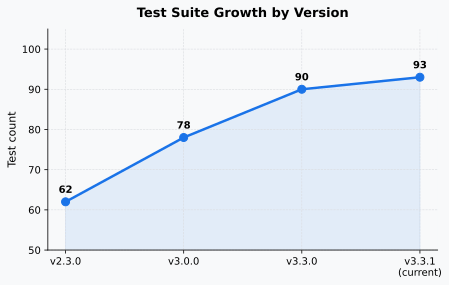
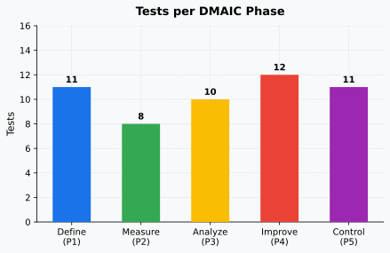
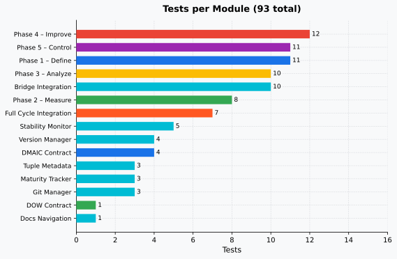
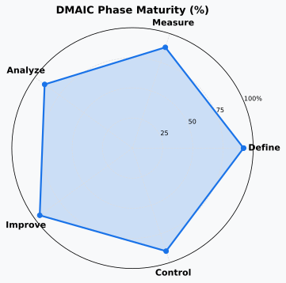
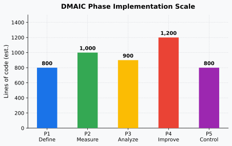
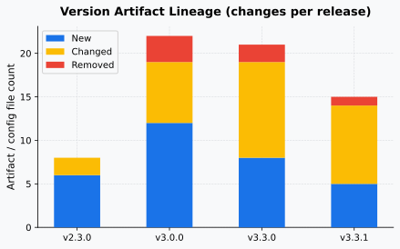

Key Performance Indicators
DMAIC Testing93
Total Tests Passing
▲ +3 since v3.3.0 | +31 since v2.3.0
5
DMAIC Phases Implemented
✔ Define · Measure · Analyze · Improve · Control
v3.3.1
Current Version
Active development · Next: v3.4.0
92.5
Quality Score (UNIFIED)
⬤ Stable · tracked per version
6
Versions in Lineage
v0.31 → v0.32 → v2.1 → UNIFIED → v2.3 → v3.3.1
15
Test Modules
DMAIC phases + infra + integration
Test Suite Growth
Testing📈 Test Count Growth by Version

Tests per DMAIC Phase & Module
DMAIC Testing🧪 Tests per DMAIC Phase

📋 All Test Modules

DMAIC Phase Details
DMAIC📌 P1 · Define
Tests11
Lines (est.)800+
Status✔ Active
Maturity92 %
📏 P2 · Measure
Tests8
Lines (est.)1 000+
Status✔ Active
Maturity88 %
🔬 P3 · Analyze
Tests10
Lines (est.)900+
Status✔ Active
Maturity90 %
🛠️ P4 · Improve
Tests12
Lines (est.)1 200+
Status✔ Active
Maturity95 %
🎛️ P5 · Control
Tests11
Lines (est.)800+
Status✔ Active
Maturity90 %
🕸️ Phase Maturity Radar

📐 Phase Implementation Scale (LOC)

Version Artifact & Configuration Lineage
Versioning📦 Artifact Changes per Version

v0.31
Canonical Foundation
Initial canonical indexes, DOW engine config, artifact ranking.
- ranking.yaml (new)
- orchestrator_config.yaml (new)
- ABACUS-v031/ hierarchy
+6 new
v0.32
Production Pipeline
10-phase DMAIC (phases 0–9), Docker deployment, DOW integration layer.
- Dockerfile (new)
- docker-compose.yml (new)
- dow_integration_executor.py (new)
- phases/ directory (new)
+12 new
7 changed
3 removed
v2.1
Production Baseline
Stabilised pipelines, validated deployment configs, CI/CD integration.
- .github/workflows/ci.yml (updated)
- DMAIC_V3/requirements.txt (pinned)
- pytest.ini (new)
+5 new
8 changed
UNIFIED
Merged Knowledge Base
v031+v032 merged. Quality score 92.5. Agent registry, orchestrator hierarchy.
- ABACUS-UNIFIED/ (merged)
- local_mcp/agent_orchestrator_v3.0.py
- DMAIC_V3/agents/ (6 agents)
+9 new
11 changed
2 removed
v2.3
Agent Framework & MCP
MCP integration, memory-optimised orchestrator, KEB/GBOGEB knowledge layer.
- local_mcp/agents/ V2.3 files
- orchestrator_config.yaml (v2.3 schema)
- DMAIC_V3/phases/ (P1–P5)
+8 new
9 changed
1 removed
v3.3.1
Core Engine & Docs
DMAIC V3 engine, 12-cluster orchestration, convergence detection, full docs, 93 tests.
- DMAIC_V3/core/ (bridge, system)
- docs/ GitHub Pages site
- DMAIC_V3/VERSION → 1.2.3
- .github/workflows/ (CI/CD)
+5 new
9 changed
1 removed
Statistical Abstraction — Test Category Breakdown
Testing DMAIC| Category | Module(s) | Tests | % of Suite | Phase | Type |
|---|---|---|---|---|---|
| DMAIC Core — Define | test_phase1_define.py | 11 | 11.8 % | P1 | Unit |
| DMAIC Core — Measure | test_phase2_measure.py | 8 | 8.6 % | P2 | Unit |
| DMAIC Core — Analyze | test_phase3_analyze.py | 10 | 10.8 % | P3 | Unit |
| DMAIC Core — Improve | test_phase4_improve.py | 12 | 12.9 % | P4 | Unit |
| DMAIC Core — Control | test_phase5_control.py | 11 | 11.8 % | P5 | Unit |
| Bridge / MCP | test_bridge_integration.py | 10 | 10.8 % | Infra | Integration |
| Full DMAIC Cycle | test_integration.py | 7 | 7.5 % | All | Integration |
| Stability Monitor | test_stability_monitor.py | 5 | 5.4 % | Infra | Unit |
| Version Manager | test_version_manager.py | 4 | 4.3 % | Infra | Unit |
| DMAIC Contract | test_dmaic_contract_core.py | 4 | 4.3 % | Core | Unit |
| Tuple Metadata | test_tuple_metadata_validation.py | 3 | 3.2 % | Infra | Unit |
| Maturity Tracker | test_maturity_tracker.py | 3 | 3.2 % | Infra | Unit |
| Git Manager | test_git_manager.py | 3 | 3.2 % | Infra | Unit |
| DOW Contract | test_dow_contract_emission.py | 1 | 1.1 % | DOW | Integration |
| Docs Navigation | test_docs_navigation.py | 1 | 1.1 % | Docs | Smoke |
| Total | 93 | 100 % | — | — | |